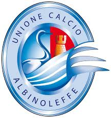

Albinoleffe

L'Unione Calcio AlbinoLeffe S.r.l., meglio nota come AlbinoLeffe, è una società calcistica italiana che rappresenta i comuni di Albino e Leffe, in provincia di Bergamo. Milita in Serie C.
Il club si è costituito nel 1998 a seguito della fusione tra le società Albinese e Leffe, rilevando la matricola federale di quest'ultima e continuandone dunque la tradizione sportiva. Ha stabilito la propria sede legale e operativa a Zanica, anch'esso appartenente al territorio orobico.
Il sodalizio bergamasco ha vinto la Coppa Italia Serie C 2001-2002 e vanta nove partecipazioni consecutive alla Serie B tra il 2003 e il 2012, durante le quali arrivò a disputare la finale play-off valida per la promozione in Serie A.